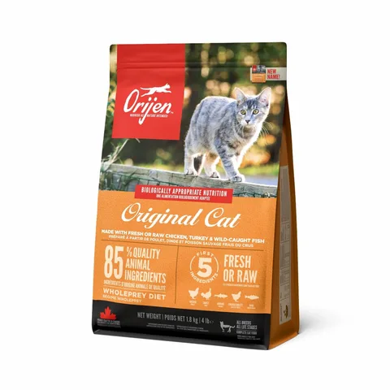

ORIJEN
ORIJEN Original（Cat & Kitten）
乾飼料・無穀・全齡（含幼貓）・1.8kg／5.4kg／17kg 袋
比歷史低價高 87%比 30 天前便宜 12.1%
90 天價格水準：偏高（最低 €8.83/kg ～ 最高 €18.75/kg，依過去 17 天每日最低價）
商店報價（依每單位價排序）
| 店家 | 規格 | 總價 | 每單位價 | 條件 | 購買 |
|---|---|---|---|---|---|
| Huisdieren.nl | 1x1.8kg | €29.66 | €16.48/kg | 滿 €59 免運・運費 €6.95 Black Friday code BLACKFRIDAY2026：全站額外 -10%（11-21～11-27）；2026-11-26 live browser：1.8kg €32.95（原 €37.49）一次價不變，有貨；黑五碼 BLACKFRIDAY2026 全站額外 -10% 今日再確認有效（11-21～11-27，剩約 1 天 14 小時；商品頁標價未含此碼，結帳另輸碼），折後 €29.66（按 -10% 計算，未加車驗證結帳價），仍為最佳價。€59 以下運 €6.95；20:00 前下單當日出貨。 | 前往 → |
| Petgamma | 1x17kg | €158.65 | €9.33/kg | 滿 €50 免運 經 ShopBuddies 返現 €6.84 沿用 2026-11-07 報價 | 前往 → |
| Petgamma | 1x5.4kg | €62.78 | €11.63/kg | 滿 €50 免運 經 ShopBuddies 返現 €2.71 沿用 2026-11-07 報價 | 前往 → |
| Amazon.nl（賣家 Plein） | 1x5.4kg | €62.83 | €11.64/kg | 免運 經 CashbackXL 返現 €4.15 沿用 2026-11-07 報價 11/02 €71.74 → €66.98 | 前往 → |
| Brekz | 1x1.8kg | €32.45 | €18.03/kg | 運費未知 沿用 2026-11-25 報價 2026-11-25 live browser：Brekz 搜尋 ORIJEN 核實：Original Cat 1.8kg €32.45 有貨；免運門檻等未在搜尋頁顯示，未核實。Brekz ORIJEN 今日首次核實（此前連續多日 Cloudflare 擋，今日換環境後清除）。注意：Huisdieren 黑五碼折後 €29.66 仍低於本品。 | 前往 → |
| Petgamma | 1x1.8kg | €33.22 | €18.46/kg | 滿 €50 免運 經 ShopBuddies 返現 €1.43 沿用 2026-11-07 報價 | 前往 → |
| Medpets | 1x1.8kg | €33.75 | €18.75/kg | 滿 €69 免運・運費 €4.95・最低訂單 €14.95 需訂閱定期配送 沿用 2026-11-17 報價 2026-11-17 live browser：1.8kg €35.90 一次價／Herhaal €33.75，有貨；與 2026-11-15 相同，無變化。Pharmapets 同品 €34.59 本輪缺貨，Medpets 為目前可買到的最佳價。 | 前往 → |
| Amazon.nl（賣家 Best Petfoods） | 1x17kg | €150.04 | €8.83/kg | 免運 經 CashbackXL 返現 €9.91 沿用 2026-11-07 報價 缺貨 2026-11-07 No featured offers available（價格為上次） | 前往 → |
| bestpetfoods | 1x17kg | €154.66 | €9.10/kg | €50 起免運，否則 €5.95；定期配送 95 折不計返現 經 YesCashback 返現 €5.29 沿用 2026-11-15 報價 缺貨 2026-11-15 curl 重抓頁面，確認頁面仍含上次價格字串（未逐變體結構化解析、庫存／運費／促銷沿用 11-13）；價格視為同 11-13；返現率沿用（ShopBuddies zooplus 1.33%/新客8%、Medpets 4%、Brekz 3.5%、YesCashback bestpetfoods 4% 今日重查未變；CashbackXL 頁為 JS 未能讀取＝未確認） | 前往 → |
| Petfooddiscount.nl | 1x17kg | €164.95 | €9.70/kg | 運費 €4.95 沿用 2026-11-15 報價 未核實 2026-11-15 curl 重抓頁面，確認頁面仍含上次價格字串（未逐變體結構化解析、庫存／運費／促銷沿用 11-13）；價格視為同 11-13；返現率沿用（ShopBuddies zooplus 1.33%/新客8%、Medpets 4%、Brekz 3.5%、YesCashback bestpetfoods 4% 今日重查未變；CashbackXL 頁為 JS 未能讀取＝未確認） | 前往 → |
| bestpetfoods | 1x5.4kg | €64.59 | €11.96/kg | €50 起免運，否則 €5.95；定期配送 95 折不計返現 沿用 2026-11-15 報價 未核實 2026-11-15 curl 重抓頁面，確認頁面仍含上次價格字串（未逐變體結構化解析、庫存／運費／促銷沿用 11-13）；價格視為同 11-13；返現率沿用（ShopBuddies zooplus 1.33%/新客8%、Medpets 4%、Brekz 3.5%、YesCashback bestpetfoods 4% 今日重查未變；CashbackXL 頁為 JS 未能讀取＝未確認） | 前往 → |
| Milo | 1x5.4kg | €64.95 | €12.03/kg | 運費見 Milo；新客約 5% 沿用 2026-11-15 報價 未核實 2026-11-15 curl 重抓頁面，確認頁面仍含上次價格字串（未逐變體結構化解析、庫存／運費／促銷沿用 11-13）；價格視為同 11-13；返現率沿用（ShopBuddies zooplus 1.33%/新客8%、Medpets 4%、Brekz 3.5%、YesCashback bestpetfoods 4% 今日重查未變；CashbackXL 頁為 JS 未能讀取＝未確認） | 前往 → |
| Petfooddiscount.nl | 1x5.4kg | €66.95 | €12.40/kg | 運費 €4.95 沿用 2026-11-15 報價 未核實 2026-11-15 curl 重抓頁面，確認頁面仍含上次價格字串（未逐變體結構化解析、庫存／運費／促銷沿用 11-13）；價格視為同 11-13；返現率沿用（ShopBuddies zooplus 1.33%/新客8%、Medpets 4%、Brekz 3.5%、YesCashback bestpetfoods 4% 今日重查未變；CashbackXL 頁為 JS 未能讀取＝未確認） | 前往 → |
| Zoofera | 1x5.4kg | €76.54 | €14.17/kg | 免運 沿用 2026-11-15 報價 未核實 2026-11-15 curl 重抓頁面，確認頁面仍含上次價格字串（未逐變體結構化解析、庫存／運費／促銷沿用 11-13）；價格視為同 11-13；返現率沿用（ShopBuddies zooplus 1.33%/新客8%、Medpets 4%、Brekz 3.5%、YesCashback bestpetfoods 4% 今日重查未變；CashbackXL 頁為 JS 未能讀取＝未確認） | 前往 → |
| PetShop24 | 1x5.4kg | €78.95 | €14.62/kg | 滿 €55 免運・運費 €5.75 沿用 2026-11-15 報價 未核實 2026-11-15 curl 重抓頁面，確認頁面仍含上次價格字串（未逐變體結構化解析、庫存／運費／促銷沿用 11-13）；價格視為同 11-13；返現率沿用（ShopBuddies zooplus 1.33%/新客8%、Medpets 4%、Brekz 3.5%、YesCashback bestpetfoods 4% 今日重查未變；CashbackXL 頁為 JS 未能讀取＝未確認） | 前往 → |
| Pharmapets | 1x1.8kg | €31.13 | €17.29/kg | 滿 €39 免運・運費 €3.99 沿用 2026-11-17 報價 缺貨 2026-11-17 browser.open：1.8kg €34.59 但缺貨（OG availability out of stock），2026-11-07 時有貨；價格未變，庫存狀態變動。 | 前往 → |
| Amazon.nl（賣家 Plein） | 1x1.8kg | €35.12 | €19.51/kg | 免運 經 CashbackXL 返現 €2.32 沿用 2026-11-07 報價 缺貨 2026-11-07 頁面 Momenteel niet verkrijgbaar（價格為上次） | 前往 → |
| bestpetfoods | 1x1.8kg | €36.70 | €20.39/kg | €50 起免運，否則 €5.95；定期配送 95 折不計返現 經 YesCashback 返現 €1.25 沿用 2026-11-15 報價 未核實 2026-11-15 curl 重抓頁面，確認頁面仍含上次價格字串（未逐變體結構化解析、庫存／運費／促銷沿用 11-13）；價格視為同 11-13；返現率沿用（ShopBuddies zooplus 1.33%/新客8%、Medpets 4%、Brekz 3.5%、YesCashback bestpetfoods 4% 今日重查未變；CashbackXL 頁為 JS 未能讀取＝未確認） | 前往 → |
| Zoofera | 1x1.8kg | €37.72 | €20.96/kg | 免運 沿用 2026-11-15 報價 未核實 2026-11-15 curl 重抓頁面，確認頁面仍含上次價格字串（未逐變體結構化解析、庫存／運費／促銷沿用 11-13）；價格視為同 11-13；返現率沿用（ShopBuddies zooplus 1.33%/新客8%、Medpets 4%、Brekz 3.5%、YesCashback bestpetfoods 4% 今日重查未變；CashbackXL 頁為 JS 未能讀取＝未確認） | 前往 → |
| PetShop24 | 1x1.8kg | €39.95 | €22.19/kg | 滿 €55 免運・運費 €5.75 沿用 2026-11-15 報價 未核實 2026-11-15 curl 重抓頁面，確認頁面仍含上次價格字串（未逐變體結構化解析、庫存／運費／促銷沿用 11-13）；價格視為同 11-13；返現率沿用（ShopBuddies zooplus 1.33%/新客8%、Medpets 4%、Brekz 3.5%、YesCashback bestpetfoods 4% 今日重查未變；CashbackXL 頁為 JS 未能讀取＝未確認） | 前往 → |